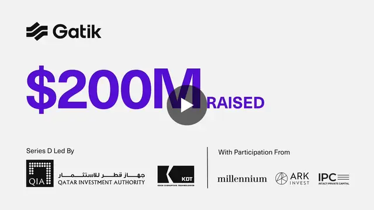

その他 / その他
Gatikが2億ドル調達、無人貨物輸送を商用展開から本格拡大へ

自動運転トラックを開発するGatikが2億ドルの資金調達を実施しました。CEO兼共同創業者のGautam Narang氏は、すでに無人貨物輸送を商用運用し、PepsiCoなどの顧客が利用していると説明しています。今回の大型調達は、自動運転トラック市場が「技術実証」から「商用インフラの拡張」へ移りつつあることを示す動きです。
QUICK READ
この記事の要点
自動運転トラックを開発するGatikが2億ドルの資金調達を実施しました。CEO兼共同創業者のGautam Narang氏は、すでに無人貨物輸送を商用運用し、PepsiCoなどの顧客が利用していると説明しています。今回の大型調達は、自動運転トラック市場が「技術…
記事で取り上げている点
- 2億ドルを調達、長期的な事業拡大へ
- PepsiCoの物流網で40台超が稼働
- 自動運転競争の評価軸が変わる
- 今後の展望
Discord掲載記事からの抜粋です。詳細・文脈は全文と出典をご確認ください。
出典・参考リンク
日付はAFNJPへの掲載日です。発表元の公開日とは異なる場合があります。